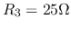
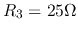
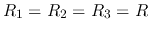
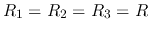
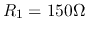
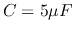
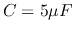

Problem 1. (33 points)
Find all node voltages in the circuit, where  ,
,
 , ,
, ,  ,
,  ,
,
 ,
,  . Use both node voltage and loop current methods.
. Use both node voltage and loop current methods.

Problem 2. (33 points)
In the circuit below, the voltage source is
 ,
and , (rms value), and the total real power
consumption is
,
and , (rms value), and the total real power
consumption is  . Find
. Find  ,
,  ,
,  and
and  .
.

Problem 3. (34 points)
In the circuit below, ,  ,
,  , .
The input voltage is
, .
The input voltage is
 .
The system is in steady state before the switch is closed at
.
The system is in steady state before the switch is closed at  . Find voltage
. Find voltage
 across
across  and current
and current  through
through  for
for  .
.